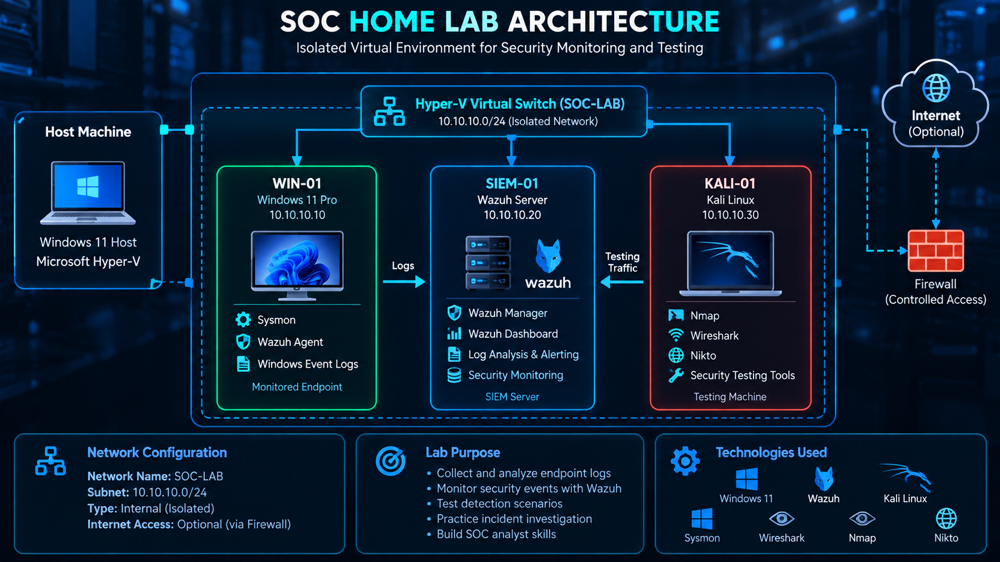

Security Monitoring
Wazuh SIEM, Sysmon, Windows Event Logs, centralized log collection.
Information Technology student at George Mason University focused on cybersecurity, security monitoring, and hands-on lab learning.
$ lab-status --summary
[OK] Hyper-V virtual machines configured
[OK] Isolated virtual network created
[OK] Wazuh agent connected
[OK] Sysmon events collected
$ detection-testing
STATUS: IN PROGRESS
Illustrative display, not live security telemetry.
I'm Natnael Haile, an Information Technology student at George Mason University with a Cybersecurity concentration. I'm building practical experience through a SOC Home Lab, technical coursework, and security-focused projects. My professional background at Amazon has strengthened my leadership, communication, and analytical skills.
Wazuh SIEM, Sysmon, Windows Event Logs, centralized log collection.
TCP/IP, Nmap, Wireshark, Nikto, security assessment concepts.
Windows, Linux, Kali Linux, Microsoft Hyper-V, isolated virtual networks.
HTML, SQL, database concepts, technical reporting, security controls documentation.
A three-VM security monitoring environment built using Hyper-V, Windows 11, Kali Linux, Sysmon, and Wazuh. The lab is designed for learning endpoint telemetry collection, detection testing, and security investigation workflows.
✓ Completed — Hyper-V environment and isolated network
✓ Completed — Sysmon and Wazuh agent setup
✓ Completed — Windows event collection
◷ In progress — Detection testing
○ Planned — Documented investigations and reports
The diagram illustrates the isolated Hyper-V environment and the relationships between the Windows endpoint, Kali Linux testing machine, and Wazuh SIEM server.

To display your diagram, upload the image to assets/soc-lab-architecture.png.
Academic work evaluating security controls and mitigation recommendations using CIS Benchmarks, OWASP Top 10, and STIG guidance.
Security Assessment DocumentationDatabase-driven academic application using a LAMP stack and MySQL for managing class registration workflows.
MySQL LAMPLead 30+ associates, monitor operational performance, and support process improvements.
Supported workflow coordination, daily operations, and team performance.
Built experience in operational execution, teamwork, and process standards.
B.S. Information Technology
Concentration: Cybersecurity
Expected graduation: December 2026
GPA: 3.76
CompTIA Security+ — In Progress
Hands-on learning through security monitoring tools, virtual machines, and coursework.
I'm interested in SOC Analyst and cybersecurity opportunities.